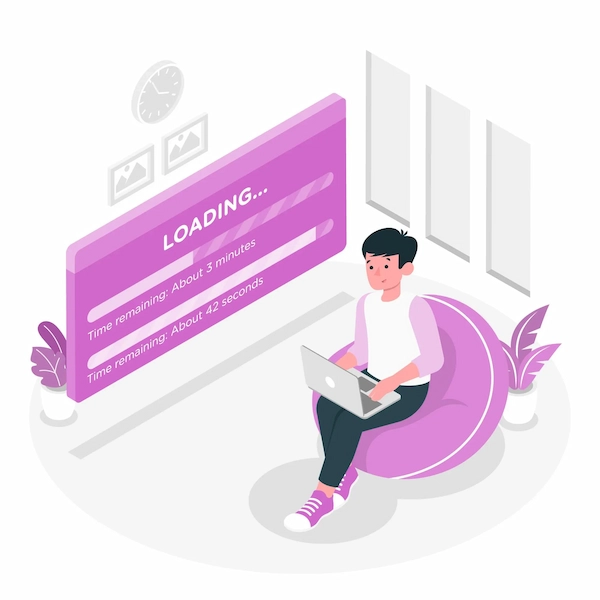

<div class="relative p-4">

  <!-- Botón para cerrar el modal, posicionado en la esquina superior derecha -->
  <button mat-icon-button aria-label="Cerrar" color="warn" (click)="closeModal()" class="close-button">
    <mat-icon>close</mat-icon>
  </button>

  <!-- Título principal -->
  <span class="block text-2xl md:text-2xl font-bold text-center mb-4 text-gray-800 mt-10">Inicia Sesión para Continuar</span>

  <!-- Contenido del diálogo -->
  <div>
    <div class="flex justify-center items-center mb-4">
      
    </div>
  </div>

  <!-- Nota adicional -->
  <div>
    <mat-card-subtitle>
      <p class="flex items-center justify-center text-justify">
        <mat-icon class="mr-2 text-[#d168cb]">info</mat-icon>Debes iniciar sesión para poder usar esta función.
      </p>
      <br>
      <a href="/login"  type="button" class="cursor-pointer  w-full flex items-center justify-center px-4 py-2 text-sm font-medium text-white rounded-lg bg-[#0d0130] hover:bg-[#0d0130] focus:ring-4 focus:ring-primary-300 dark:bg-primary-600 dark:hover:bg-primary-700 focus:outline-none dark:focus:ring-primary-800">
        Iniciar Sesión
      </a>
    </mat-card-subtitle>


  </div>

</div>


